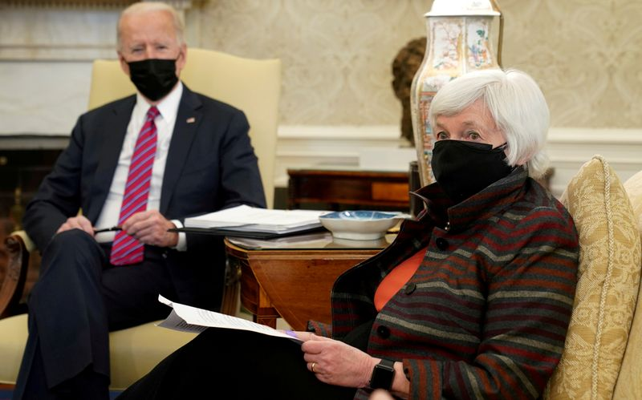

Analysis: A taxing question for multinationals leaves stocks unscathed
By Thyagaraju Adinarayan and Sujata Rao
LONDON (Reuters) – A global minimum corporate tax rate could deal a major blow to the multinationals which some governments allege shift billions of dollars in profits every year to low-tax havens, as well as triggering a fundamental reassessment of corporate earnings.
The chances of such reform rose this week as Treasury Secretary Janet Yellen threw the weight of the U.S. government behind a push to upend international tax rules.
Yet stock markets held near record highs, boosted by the near-zero U.S. interest rates as well as a bet that a proposed 21% minimum tax rate, regardless of where companies make their sales, would not be implemented for years.
But some such as Grace Peters, investment strategist at J.P.Morgan Private Bank, think future earnings estimates 'could be underpricing the full potential impact of tax increases'.
'The issue is definitely right up as a major risk for companies,' Peters said after the proposals were aired.
High-profile names including Apple, Google and Starbucks have been accused by governments in Europe of using legal loopholes in fragmented global taxation regimes to pay less tax.
A minimum corporate tax level would stamp out the ability of companies to move income from 'intangible' sources, such as patents, software and royalties, to countries with lower rates.
This could double the existing tax paid on profits for some companies and cause a major headache for countries such as Ireland which have attracted many with a 12.5% rate, which research last year showed is half the global average.
The companies have not commented on the latest proposals.
A paper by Thomas Torslov at the University of Copenhagen and University of California academics Gabriel Zucman and Ludvig Wier calculated that profit shifting amounted to almost 40% of multinational profits and that 35% of these profits came from non-haven EU nations, while 25% were from the United States.
Although technology and healthcare firms are seen as major beneficiaries of tax arbitrage, stock market investors appear not to be fazed by the threat to companies’ earnings.
Their focus is possibly on an expected rebound in corporate earnings, with U.S. companies set to report a 25% jump in profits this year, and a near 14% rise in 2022 after the damage inflicted by the COVID-19 pandemic.
INVESTMENT HURDLE?
Irish finance minister, Paschal Donohoe, voiced 'reservations' about the proposal, while the World Bank has warned against setting a minimum tax rate that is too high, saying it would hinder poor countries in attracting investment.
Ireland is positioning itself for lower corporate tax receipts and has budgeted for them to fall by 500 million euros a year from 2022 and by 2025 to lose two billion euros a year.
The proposed reforms would probably also lower public revenues in poorer European Union states Hungary and Bulgaria with statutory tax rates of 9% and 10% respectively, UniCredit economist Andreas Rees said.
And it would shift taxable revenues back to high-tax countries such as France, Germany and Italy where rates range from 28% to 32%, Rees added.
Marija Veitmane, senior multi-asset strategist at State Street Global Markets said markets appeared sceptical a 21% rate would be adopted and 'it would take a long time to negotiate'.
U.S. THREAT
U.S. multinationals face another blow; the prospect of a domestic corporate tax rate rise to 28%, from the 21% levy set by former-President Donald Trump in 2017.That plan too faces stiff opposition within Congress
Companies have come in for withering criticism for paying little or no U.S. federal tax, and Amazon chief executive Jeff Bezos said this week he supported hiking tax rates to overhaul infrastructure.
UBS analysts predict that a 28% tax rate would deliver a 7.4% hit for S 500 companies’ earnings per share.They expect the hike to go into effect in 2022, though at a slightly lower 25% rate, which would result in a 3.6% earnings hit.
President Joe Biden signalled on Wednesday he was willing to negotiate how much U.S. companies would pay.
Pimco managing director and the head of public policy Libby Cantrill dismissed fears of a major equity setback.
'While tax increases are likely on the horizon, they are also likely to be watered down in the final version, take longer to pass, be less of a headwind to economic growth, and, as a result, give even more runway for equities and risk assets to rally,' Cantrill told clients in a blog last month.
(Reporting by Thyagaraju Adinarayan, Sujata Rao in London; additional reporting by Megan Davies in New York and Padraic Halpin in Dublin; Editing by Alexander Smith)
Posted On: 2021-04-08T00:00:00

Content Date: 2021-04-08
Download Date: 2021-04-17
Document ID: L0C04AADO